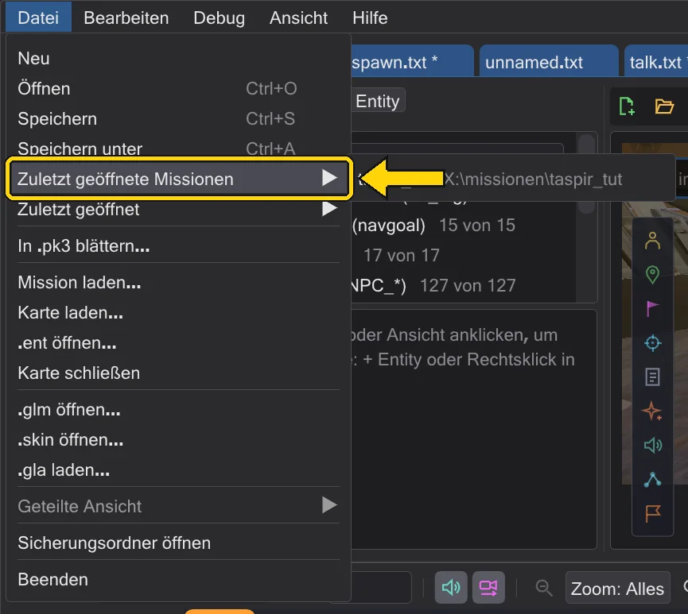

Missionen
Eine Mission ist eine Karte mit ihren Entities und all ihren Skripten. Eine ganz öffnen, eine eigene bauen und sie in ein .pk3 packen, das das Spiel lädt.
Eine Mission öffnen#
Mission laden (Menü Datei oder die Kartenleiste) wählt ein .pk3 und nennt alle Missionen dieses Spiels - die Karten mit Skripten aus allen Archiven der Spielordner, genau so, wie das Spiel sie findet (je Name zählt das Archiv, das gewinnt). Welches Archiv des Spiels man wählt, ist gleich: assets1.pk3 des reinen Jedi Academy nennt t1_sour, kor1, yavin1 … genau wie assets0.pk3. Die Missionen des gewählten Archivs stehen oben, die übrigen folgen, sobald sie gelesen sind (die Karten werden im Hintergrund gelesen - die Zeile über der Liste zeigt, wie weit). Das Filterfeld schränkt die Liste nach dem Namen ein. Eine wählen, und alles ist eingerichtet: die Karte, ihre .ent mit den Figuren der Mission und jedes Skript der Mission in seinem eigenen Reiter. Alle Reiter teilen sich Karte und Kamera.

Die Reiter öffnen sich in der Reihenfolge, in der das Spiel die Skripte startet. Dazu spielt BehavEd-Remake die Karte vom Laden an wie die Engine: die spawnscripts der Entities, das spawnscript von worldspawn, trigger_always, NPC-Spawner ohne targetname, die Ziele der Startposition, wenn der Spieler ins Spiel kommt - und alles, was daraus über run, use, Relais, Zähler, Spawner und kill mit deathscript folgt. Vorn steht der Reiter des ersten Skripts. Skripte, die erst der Spieler auslöst (ein Trigger, in den er läuft, ein Kampf), stehen hinten, in der Reihenfolge der Entities.
Welche Spielordner gelten, entscheidet das Archiv: liegt es in einem deiner Spielordner (Bearbeiten → Spielordner), gelten diese. Gehört es zu einer anderen Installation - deren base oder ein Mod-Ordner neben einem base -, nutzt BehavEd-Remake nur für diese Sitzung die Ordner dieser Installation in der Reihenfolge der Engine (base, dann die Mod) und mischt deine eingerichteten Ordner nicht dazu. Ein .pk3 in irgendeinem anderen Ordner kommt hinter deine Spielordner, ebenfalls nur für diese Sitzung. Gespeichert wird nichts: das Fenster der Spielordner zeigt die Ordner der Sitzung mit einem Knopf zurück zu deinen eigenen (Eingerichtete Spielordner verwenden). Jeder Missionsreiter behält die Ordner seines Spiels: liegt in einem Reiter eine Mission von Jedi Outcast und in einem anderen eine von Jedi Academy, wechseln mit dem Reiter auch die Spielordner und das Regelwerk.
Zuletzt geöffnete Missionen#
Datei → Zuletzt geöffnete Missionen und die Startfläche nennen die zuletzt geöffneten Missionen - aus einem Archiv oder aus einem Missionsordner. Ein Klick öffnet das ganze Projekt wieder: Karte, Entities und alle Skripte. Ein Eintrag, dessen Datei fehlt, fällt aus der Liste.

Eine neue Mission#
Neue Mission beginnt eine Mission auf einer beliebigen Karte. Wähle die Karte, gib der Mission einen Namen (Buchstaben, Ziffern und _; das Spiel lädt sie als maps/<Name>.bsp, also devmap <Name>) und einen Skriptordner. BehavEd-Remake legt einen Spielerstart, einen Skriptstarter, das Intro-Skript und einen Missionsordner unter Dokumente\behaved\missions an. Das Intro läuft, wenn der Spieler erscheint.

Eine Mission, die nie gepackt wurde, lebt in ihrem Ordner; Missionsordner öffnen setzt sie nach einem Neustart fort.
Eine Mission speichern#
Mission speichern zeigt, was ins Archiv kommt - jede Datei mit ihrer Größe - und prüft die Mission vorher: ein Skript, das eine Entity benutzt, das es aber nicht gibt, ein Skript, das sich nicht übersetzen lässt, kein Spielerstart, ein Ziel, das ins Leere zeigt, eine .str ohne ENDMARKER. Fehler (rot) müssen behoben werden, Warnungen (orange) dürfen bleiben. Speichern speichert alle Skripte, schreibt die .ent, übersetzt die Skripte, nimmt deine eigenen ROFF-Dateien mit und packt das .pk3 in den Spielordner.

| Nr. | Name | Was es macht |
|---|---|---|
| 1 | Spielarchiv (.pk3) | Wohin die .pk3 geschrieben wird; Wählen wählt einen anderen Ort. |
| 2 | Speichern / Abbrechen | Speichert, übersetzt und packt - oder schließt das Fenster. Darüber: jede Datei des Pakets und die Prüfungen. |
zz_<Name>.pk3, damit es gegen ältere Dateien gewinnt. Starte das Spiel und tippe in der Konsole devmap <Name>.